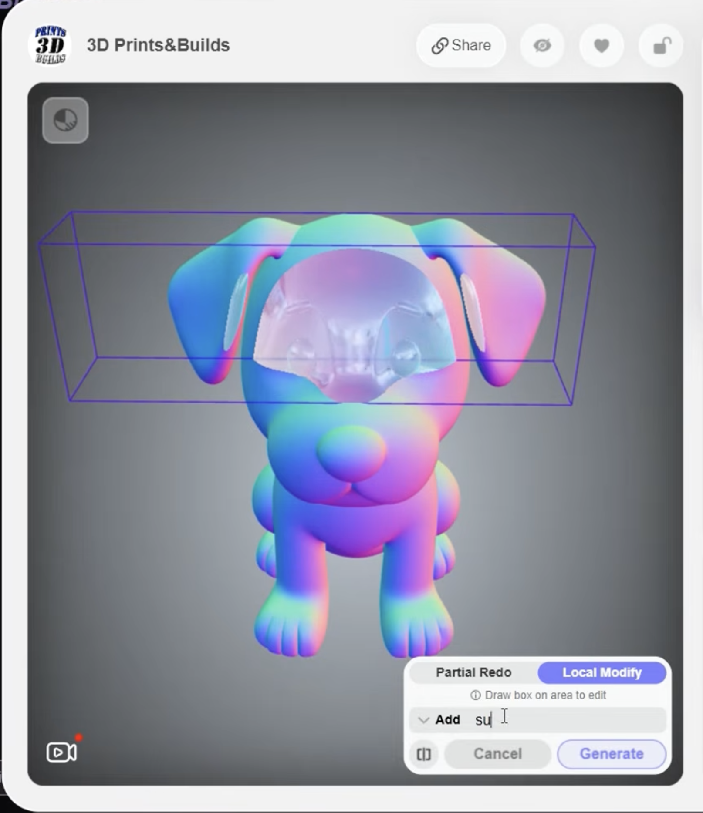

Qualitative, not complete
A relation is named, but distance, orientation and clearance remain unspecified. [1,2]

"Two market stalls around a well. Crates beside the left stall. Keep a clear route to the gate."
A relation is named, but distance, orientation and clearance remain unspecified. [1,2]
Greyboxes test scale, flow and composition before final assets. [3,5]
Direct actions reduce the gap between intention and operation. [6–11]
ContributionVisual composition is more direct than a long scene description
Authoring limitThe sketch specifies one view rather than editable 3D spatial relationships
ContributionRoom proxies and spatial controls can guide the generated result
Authoring limitThe focus is model control, not an end-to-end designer authoring workflow
ContributionSimulation and agentic repair reveal errors hidden by plausible views
Authoring limitPlacement and correction remain largely system-directed
ContributionLocal changes through instructions, sketches or inpainting
Authoring limitControls remain tied to NeRF or Gaussian representations
ContributionNeighbouring 3D structure helps preserve context
Authoring limitNo interactive object-level selection is exposed
ContributionPrograms retain structure; agents inspect and repair scenes
Authoring limitDesigner-authored spatial decisions remain limited
Local modification Draw a 3D box → describe the change
Spatial conditioning via bounding boxes · voxels · point clouds
Part-level decomposition via bounding boxes · surface regions

Unity-integrated spatial interaction
Editable authoring workflow
Free · ConfigurablePosition
volume
rotation
“cute”
“pink house”
Linear depth
Depth-derived edge map
Ready in the scene
Positive · low-poly 3D model
Negative · scene · occlusion · wrong view
Depth + edge controlled
Isolated object image
Image → mesh
Upright correction
Fit to proxy volume
How do editable spatial proxies affect control, workload and output quality in 3D scene generation and refinement?
How does proxy guidance affect spatial fit, effort and predictability?
How does region selection affect edit locality, preservation and predictability?
Proxy-guided generation produces objects that fit the intended layout more closely than text-only prompting.
Spatial controls increase predictability and agency and reduce mental demand or frustration.
Region-based refinement changes more inside the selection, preserves more outside it and is preferred over global regeneration.

“photorealistic house, right-front view, real-estate photo, natural daylight”

“low poly 3D model”

Wall normals: smallest eigenvector of the scatter matrix
Find the minimum-area footprint
Rotate mesh children, then scale the root
Use non-uniform scaling
Fit with upright geometry


Fit to untouched geometry · hide the original inside the OBB · place the refined at the region
Edit Front · Left · Back · Right
Shared prompt, checkpoint + seed
Crop to projected OBB
Centre without distortion
Tagged views
SEQ [42]Task ease
Paas [43]Mental effort
CSI [45]Creative support
Generation3D IoU · Chamfer distance · blind fit rating · time · attempts
Both phasesPredictability · agency · phase measures · interaction logs
RefinementChange inside OBB · change outside OBB · seam validity · preference
H2NASA-TLX [40,41]Workload
H2UMUX-LITE [44]Usability
H1Blind output ratingFit · visual quality
H2/H3Agency + preference [12]Ownership · choice
Equivalent goal and authoring environment in both conditions
Preserve the surrounding geometry
Check instructions · logging · obvious difficulty problems
Both conditions · counterbalanced order · final sample after pilot
Order effects · spatial logs · questionnaires · qualitative comments
Proxy + capture
Two lifters
Clip + weld + validate
Colab validated
Implemented
Set up test scenarios
Test end-to-end scene setup
1–2 participants
Analyse + write
Image liftingBackground, perspective and irregular topology can enter the mesh.
Backend costColab works, but sustained high-quality generation is expensive.
Perspective · background geometry · irregular topology · unstable dimensions
Cleaner topologyMore reliable refinement
Repeatable dimensionsPredictable fit
Semantic componentsRoof · door · windows
Procedural generation where structure can be specified
+Hunyuan3D for open-ended forms
[39,46–48]Augmenting Text Prompts with Spatial Proxy Controls in AI-Assisted 3D Scene Generation within Unity
Press A for the implementation appendix
Fast feedback
Lower fidelity · unreliable for refinementHigher fidelity
Slower · Linux · higher compute costA detailed implementation path for the hybrid option.
A local edit updates parameters instead of reconstructing the asset.